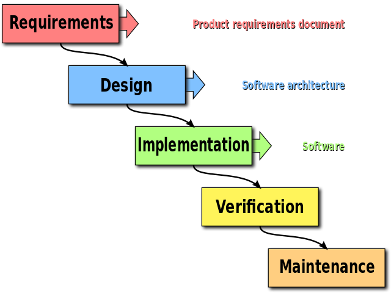

Developing a Real World application
>_ Things Lab
Introducing modern techniques of software engineering through PRACTICE
<?php
try {
$conn = new PDO("mysql:host=127.0.0.1;dbname=DragonBallZ",
$username, $password);
} catch (PDOException $ex) {
print "Error!" . $ex->getMessage() ;
exit();
}
$select = "SELECT character_name FROM super_saiyan WHERE power > 9000;";
$resultSet = $conn->query($select);
foreach ($resultSet as $result) // this should print Goku!
print $result['character_name'];
?>
PHP: Hypertext Preprocessor
Suited to web development
Easy to learn
Massive online community
There are plenty of PHP Frameworks
Managing PHP Dependencies with Composer
{
"require": {
"vendor/dependency": "version",
"monolog/monolog": "1.2.*",
"fzaninotto/faker": "1.4.0"
}
}
$ composer install<html5/> + {CSS3} + JS
CSS frameworks
JS frameworks
- AngularJS
- Ember.js
- Backbone.js
- jQuery
- A lot more...
Bower: composer for JS
A package manager for the web
Simple installation of JS libraries
- $ bower init
- add packages into
bower.json - $ bower install
Automate with Grunt or Gulp
Automate minification, compilation, testing, etc.
Get to know Grunt
Get to know Gulp
Check this presentation for the difference
Yeoman for generator
- Helps kickstarting new projects
- Forces the usage of best practices and tools
- A LOT of generators
Databases

Structured Query Language - SQL
- Oracle Database
- SQL Server
- MySQL
- PostgreSQL
- DB2
- A lot more...
An SQL database
NoSQL
Document Type
{ "_id" : "1", "username" : "thingslab", "website": "www.thingslab.cc" }
{ "_id" : "2", "username" : "google", "website": "www.google.al" }
{ "_id" : "3", "username" : "facebook", "website": "www.facebook.com" }
{ "_id" : "4", "username" : "twitter", "website": "www.twitter.com" }
Key-Value
{
"Harry Potter and the Chamber of Secrets": "J. K. Rowling",
"De motu corporum": "Isaac Newton",
"Love in the Time of Cholera": "Gabriel Garcia Marquez",
"The Castle": "Ismail Kadare"
}
Graph

Search Engines
What does a Search Engine
- Efficient data indexing
- Text Search
- Filtering
- Word Stemming
- Quality Scoring
- Location-based search
Lucene
Information Retrieval Software Library
Read more here
Elastic Search
Search server built on top of Lucene
Free and Open Source
Built in Java == cross-platform
JSON-based REST API
From MySQL to Elastic Search
Solr
Also built on top of Lucene
Also written in Java
Extensible through plugins
Solr vs ES
http://solr-vs-elasticsearch.com/Virtualized Environments
Works on my machine...
Easy to configure
Development environment == production environment
Code that Works!
Configs made simpler
How to do it?
$ vagrant init hashicorp/precise32$ vagrant upGrab a coffee and let Vagrant do the work
Version control
Version control is a system that records changes to a file or set of files over time so that you can recall specific versions later. For the examples in this book you will use software source code as the files being version controlled, though in reality you can do this with nearly any type of file on a computer.
Our choice: git
Git is Fast
Git is Small
Git is Distributed
Git is Easy to learn
Git is The new standard
Where to learn Git?
- Our old presentation
- try.github.com
- Git tower
- Atlassian tutorial
- A lot of practice
Software Development Methods (SDMs)
Waterfall Model
Rapid Application Prototyping (RAD)
Creating small, uncomplete prototypes
Brakes the whole project in smaller mini-projects
User involved in the development process
Extreme Programming (XP)
Test Automation
A way to make sure that your code will always work.What to test?
- Platform and OS independence
- Use cases
- User Interface (browser automation)
- Heavy load performance
Unit Testing
Automated testing of small units of code
Locate problems early (TDD in XP and Scrum)
Simplifies refactoring
Testing tools
Continuous Integration
Best CI practices
- Maintaining a code repository
- Build automation
- Self-testing builts
- Regular, frequent commits
- Build every commit
- Fast builds
- Test in a clone of the production environment
- The results of the latest build are visible
- Deployment automation